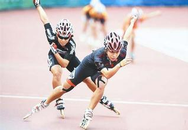

我的轮滑 |
|||
| 首页 | 我的设计 | 我的古筝 | 我的轮滑 |
轮滑（Roller skating）又称滚轴溜冰、滑旱冰， 是穿着带滚轮的特制鞋在坚硬的场地上滑行的运动 。今日多数的滚轴溜冰者主要都使用直排轮，又称 刷刷，（直排旱冰爱好者对这项运动的别称，来源 于溜冰中轮子和地面摩擦时所发出的声音，同时也 称溜冰鞋为“刷子”，称在马路上溜冰为“刷街”）。 因此直排轮也几乎成为了轮滑运动的代名词。 ?
鞋身：轮滑鞋的外壳可以防止外来的冲击，具有保 护脚部的作用。一般用有鞋扣的鞋身较方便穿着； 绑鞋带的会较贴脚，但穿脱较麻烦。一般比较好的 单排轮滑鞋都是绑带加一个扣的设计。一般的单排 轮滑鞋都有一个内靴，可以缓冲足部和鞋壳之间的 摩擦，以保护足部，使皮肤不易擦伤和起水泡。好的 鞋身应该要够坚固，海绵要够厚，密度也要够大。 ?
底架：底架为连接轮子及鞋壳之结构体，底架系统的 坚韧性，是决定溜冰鞋寿命的一大因素。通常底架的 设计都有不同的类型，有的较厚有的较薄。底架一般 装上四个轮子，但也有装置三个轮子的小底架，以及 可以装置五个轮子的速度鞋。铝合金的底架比较好， 因铝合金的底架较坚硬，不容易变形，但价钱较贵。 ?
轮子：轮子必须是高弹性轮，绝不能是塑料轮子。最 好选聚酯材料制的，即胶轮，它适应各种场地和状况。 胶轮比较软，弹性较好，塑料轮子则是硬硬的，你可试 敲地面听听声音来感觉，你会发现塑料轮子的声音是尖 锐许多的，容易打滑。有些轮滑鞋会配置六角扳手，用以 拧紧轮子。 ?
大小：除了注意鞋子的各部分质量以外，还要注意脚的尺 码。专家建议，就买平时穿的尺码，一定要自己穿过。绝 对不能太大，只要不觉得紧不顶脚，就可以了。一般系好 鞋带、小腿和地面垂直时，脚的最前端和鞋内套的距离是 半个大拇指(手)那么多就好，太大的鞋不安全。 ?
初学阶段可以买非专业性滑轮。一般说来，初学者还应练 习在路面上做简单滑行、转弯、刹车等基本动作，非专业 性的滑轮就能满足这些要求，而且价格比较便宜，一两百 元就能买到。但是当水平提高开始学习各种极限动作时， 就必须买专业级滑轮了，因为那些高难度动作不是一般的 滑轮可以承受。 |
 | 1. 原地踏步，练习静平衡，熟悉轮滑的性能。 2. 用互助法和扶助法练习平衡，两个具相互扶 助或双手扶在身边的横杆或其他物体止，前后左 右移动，练习平衡技术。 3. 牵引法，借助外力练习平衡，比如可以通过对 静止物体的反作用力使自己滑动；让别人用力将自 己推动；抓住正在移动的人或其他物体上，使自己 前进或后退。在初步掌握了上述的平衡技巧后，你 就可以自己滑行上路了。之后你可以进一步掌握急 停、转弯和后退等技巧。轮滑虽然是一种容易掌握 的休闲运动，但危险随时存在，它很容易导致外伤 ，因此必须要有安全意识。一般情况下，手掌、肩 肘、膝部、脚踝及头部容易受伤。所以，在轮滑时， 必须佩带护具，常见的护具有：头盔、护肘、护膝等 |
|